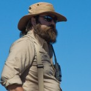

Read the biographies below. They tell you all about our Captains.
Senior Captain, Walter Rybka
Born in Brooklyn, NY, Walter Rybka first tasted salt air during frequent visits to the New York waterfront, sparking a life-long interest in all things maritime. After graduating from Macalester College in St. Paul, Minnesota, in 1972, he began sailing in the schooner Pioneer, which ran a sail training program for adjudicated youth based at the South Street Seaport Museum.
Between 1977 and 1983, Rybka served as the Restoration Director for the Galveston Historical Foundation’s Elissa, supervising the complete rebuilding of the 1877 iron barque, from a gutted shell to a voyaging vessel. During the next seven years, he divided his time between consulting on numerous ship preservation projects and serving as a watch officer or master in various sail training programs.
In 1991, he was recruited by the Pennsylvania Historical and Museum Commission as captain of the U.S. Brig Niagara to head a program of both sail training and historic interpretation. His duties also included assisting with the creation of the Erie Maritime Museum which opened in 1998.
Since 2001, Captain Rybka has been director of both ship and museum. He still sails part time as relief captain of the U.S. Brig Niagara, now inspected and approved by the U.S. Coast Guard as a Sailing School Vessel. He holds a USCG license as Master, auxiliary sail, 1600 tons, Oceans. In addition, he has served on the advisory board of the American Sail Training Association, as well as advisory panels for the project to sail U.S.S. Constitution and currently for the Museum’s Sailors Speak project.
In 2006, the USS Constitution Museum Foundation presented Rybka with that year’s Don Turner Award for historic ship preservation. Also in 2006, the American Sail Training Association recognized him with its Sail Trainer of the Year award. He previously received this same award in 1993.
Captain, William Sabatini
Captain William (Billy) Sabatini grew up in southeastern Massachusetts, on Cape Cod, and so has been around water his entire life. He began sailing traditionally-rigged vessels in Newport, RI, before attending Tabor Academy, an academically rigorous high school in Marion, MA.
While at Tabor, Billy sailed for four years on the Schooner Tabor Boy; he also crewed on various other schooners during his summer breaks. In the latter half of his senior year, he restored a 1939 Alden Coastwise Cruiser, Luau, which he sailed throughout New England after graduation. The following year, he sailed Luau to Maine Maritime Academy, where he spent the next four years earning a Bachelor of Science degree in Small Vessel Operations, with a concentration in Sail Training. While at Maine Maritime, Billy worked his way up to the position of Chief Mate of the Academy’s schooner Bowdoin, where he designed and implemented Bowdoin’s sail training program.
During his college career, he also assisted in the development of a supplemental seamanship program, applicable to both traditional and modern vessels, for students in all majors at the Academy. Billy was active in the MMA drama club, as an actor, director and producer, and is especially remembered for his star turn in Picasso at the Lapin Agile, in the role of Gaston.
Billy began his career at the U.S. Brig Niagara in 2005, as 3rd Mate, advancing to Chief Mate in 2008 and Captain in 2014. During the winter months, he has served as Mate or Captain on a number of traditionally-rigged vessels on every coast of the United States. Over the last two decades, he has sailed the East coast from Nova Scotia to Venezuela, the West Coast from Alaska to Mexico, and the entire Great Lakes system, as well as crossing the Atlantic twice.
Billy enters his twelfth season on Niagara, and his third season as Captain.
Billy lives in Erie with his wife Megan, who is an art teacher at Union City High School, their dog Bruin, and their cats Commodore and Dory.
The Flagship Niagara League (FNL) is a 501(c)3, non-profit educational associate organization of the Pennsylvania Historical and Museum Commission (PHMC), chartered to facilitate citizen participation and operation of the U.S. Brig Niagara and its homeport, Erie Maritime Museum.
The Erie Maritime Museum and the U.S. Brig Niagara educate the public regarding the region’s maritime heritage, The War of 1812 in Lake Erie including the building of Oliver Hazard Perry’s fleet, and the experience of the U.S. Brig Niagara under sail. The Erie Maritime Museum and the U.S. Brig Niagara are administered by the Pennsylvania Historical and Museum Commission and are actively supported by the Flagship Niagara League which is a non-profit community based organization.